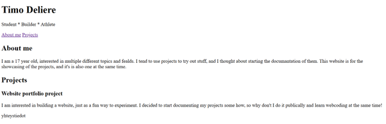
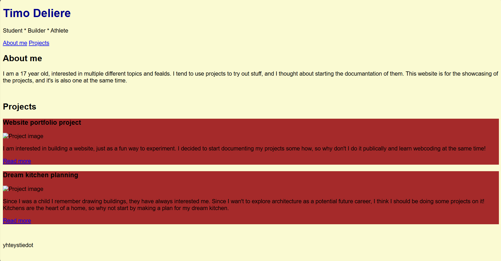
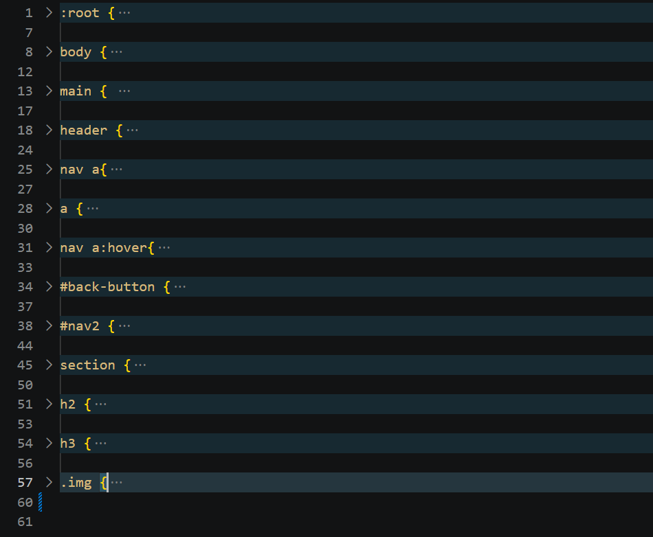

The idea
The whole idea for this project came from me not knowing what I want to do in my life. I am interested in so many different kind's of fields, and I like them all. So while sparring about what should my life be like with ChatGPT I decided to start tryeing to do different things from all the topics, and then with the knowledge of whitch of the projects I enjoied the most I would be able of deciding to which field should I orient myself. ChatGPT proposed me to document them online, so that I could possibly also use it to show my skills etc. in the future, and I thought that this would actually be really cool. So here we are, I am building my first website ever from scratch for personal.
Goals and hopes for the project
Of course this is a really usefull project for me in meany ways, but I am also going to learned coding at the same time, I already have done a bit of python, but html and css are completely new for me. I am excited to learn more about them, I find it cool to be able of making stuff myself, so that I am not dependant on other people to do stuff for me if I don't want to. This project should provide me with a portfolio, that helps me eventually land a job by showing real proof of my skills and work. It should also help me to decide wchich kind of career I want to pursue in my life, and help me find the things I really enjoy doing in life. Also when I'll have this I will learn a lot of different kind's of skills with different projects, my language and writing skills are going to get better ect. In this project I want to learn to build a skeleton of a website in html by myself and to decorate it in a way that does not hurt the eye.
The process of building the project
Firstly, I did know a bit of HTML, because of a participation in a school event. So I started by mapping out the bare bones structure of the web sites homepage. This was the first version that I came up with. My thought process was to firstly map out the page I wanted on a paper, and then execute it into a simple structure on HTML. While building this I discovered the atribute "nav", which allowed me to build a basic navigation tool for the website. Here is the first version of the page.

Using CSS to make the structure look ok.
My next step, was to start using css. CSS is a completely new language for me, so I had to start learning it to be able of achieving the look of for the site I wanted. This is the part of projects I like, learning something new to accomplish something! With what I learned I was able to add colors to my page and start to structure it visually. Here is a picture of the site with colors I tested (not to look appealing or eanything, but to try out code while practising)

Thought, it is still really bad for a professional looking portfolio page, I was happy about the progress. With this addition I also added image placeholders, until I get propper pictures for my projects, they had to cut it. I also added more structure with HTML, but most progress was made with CSS and making the page look nicer. At the end I ended up with this kind of color palet you see on the website, I found it to look professional enough and still not boring.

Once the main homepage was done, I started to build the actual documentation pages. Thease are going to have all the documentation pictures, texts ect. I started again by just thinking of the layout I wanted the documentation page to have. I came up with segments and added them together to form a structure. Then, I had to actually try them out. I am doing it right now, while actually documenting the project. Then it was time for the CSS, I was going to try and copy the same kind of style that I had with the homepage. I think I did a quite nice job with that. For me atleast it feels really cohesive with the homepage. As a bonus I also got to make the segments work together. I feel that here was the real part in the project where I learned. Building the homepage was just about understanding what things did, and now I got to use and explore them myself, with a bit more knowledge. I actually coded this documentation page complitely by myself, and as reference I only used the homepages code. It was fun.
Finished project
The fun thing is that I don't need to showcase my work sepparetely, because my work is the website. I hope that you have enjoyed seing the documentation of my first peace of work on the reasult it self. I actually liked this project, because it felt meaningfull to me, I guess that is the most important part with thease projects, I do them on topics I like, and would want to explore deeper.
Lessons learned
During this project I ended up learining html basics, css basics. Code structure, folder organisation. Code tool usage (mainly VS code) and runing a website that alone as an experience is valuable. I also learned documentation, wchich is not that common as a skill, and thus I belive it to be cuite usefull.